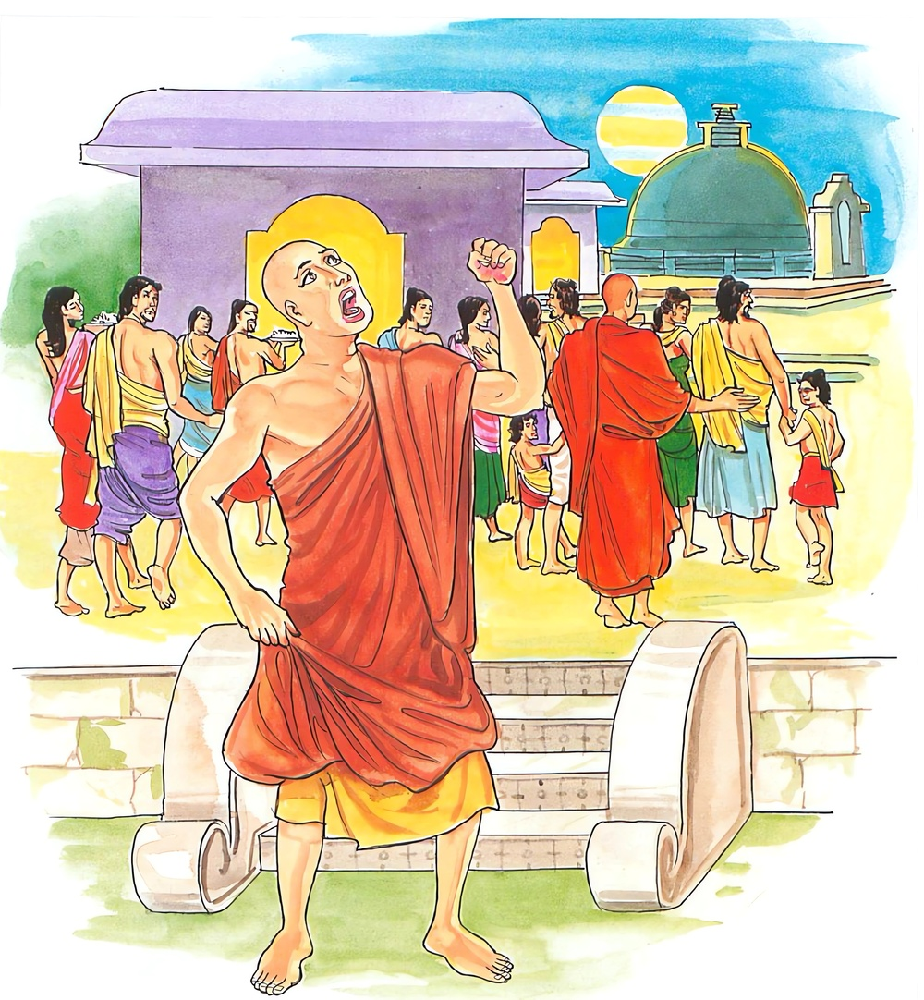
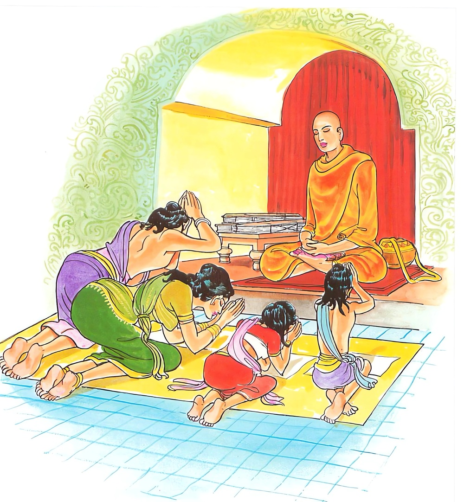

1-7 සත්වන දේවදත්ත වස්තුවයි.
මෙම කතාව සද්ධර්ම සාගරයෙන් ද කියවන්න.
අනික්කසාවො කාසාවං යො වත්ථං පරිදහෙස්සති
අපෙතො දමසච්චෙන න සො කාසාවමරහති.
රාගාදි කෙලෙස්කසට සහිත වූ ඉන්ද්රියදමනයෙන් ද වාක් සත්යයෙන් ද තොර වූ යමෙක් කසාවත් හඳනේ පොරෝනේ වේ ද, ඒ පුද්ගලයා කසාවත් දැරීමට සුදුසු නො වෙයි.

යො ච වන්තකසාවස්ස සීලෙසු සුසමාහිතො
උපෙතො දමසච්චෙන ස වෙ කාසාවමරහති.
යම් ආර්ය පුද්ගලයෙක් වමාරා ලු කෙලෙස් කසට ඇත්තේ වන්නේ ද. සිවු පිරිසිදු සිල්හි මොනොවට පිහිටියේ වේ ද, ඉන්ද්රියදමනයෙන් හා වාක්සත්යයෙන් හා යුක්ත ද, හෙ තෙම කසාවත් දැරීමට ඒකාන්තයෙන් සුදුසු වෙයි.

‘අනික්කසාවො’ යනාදි මේ ධර්මදේශනාව බුදුන් දෙව්රම වැඩ වසන සමයෙහි රජගහනුවර දෙව්දතුන්ගේ කාෂායවස්ත්ර ලාභයක් අරහයා දේශනාකරනලදි.
එක් කලෙක අගසවු දෙනම පන්සීය බැගින් වූ තම තමන්ගේ පිරිවර භික්ෂූන්ද කැටුව බුදුන්ගෙන් අවසර ලබා දෙව්රමින් පිටත්ව රජගහනුවරට ගියහ. රජගහනුවර වැසි දෙදෙනා තුන්දෙනා හෝ බොහෝදෙනා එකතුව ආගන්තුක දාන දුන්හ.
ඉක්බිති දිනක ආයුෂ්මත් සැරියුත් ස්ථවිරයන්වහන්සේ අනුමෝදනාවක් කරමින් උපාසකවරුනි, එක් පුද්ගලයෙක් තමන් දන් දෙයි. අනුන් ඊට සම්මාදන් කරනොගනියි. හෙතෙම උපනුපන් තන්හි හෝගසම්පත් ලබයි. පිරිවර සම්පත් නොලබයි. එකෙක් තමන් නොදෙයි. අනුන් සමාදන් කරවයි. හෙතෙම උපනුපන් තන්හි පිරිවර සම්පත් ලබයි. භෝග සම්පත් නොලබයි. එකෙක් තමනුත් නොදෙයි. අනුනුත් සම්මාදන් නොකරවයි. හෙතෙම උපනුපන් තන්හි කැඳ ටිකත් පවා නොලබයි. අනාථවූ ප්රත්යය නොලබන්නෙක් වෙයි. එකෙක් තමනුත් දන් දෙයි, අනුනුත් ඊට සමාදන් කරවයි. හෙතෙම උපනුපන් තැන්වල ආත්මභාව සියගණන් දහස්ගණන් ලක්ෂ ගණන්වලදී භවභෝග සම්පත් මෙම පරිවාර සම්පාද ලබන්නේයයි දහම් දෙසූහ.
ඒ පිරිස මැද සිටි එක් ඥානවන්ත පුරුෂයෙක් මේ බණ අසා සිට, ධර්ම දේශනාව අසිරිමත්ය, හොඳ කරුණක් කියන ලදැයි කියා, මා විසින් මේ කියන ලද දෙයාකාර සම්පත්ම ලැබෙන පිනක් කළයුතුයයි සිතා, ස්වාමීනි, හෙට මගේ දානය පිළිගනු මැනවයි තෙරණුවන්ට ආරාධනාකෙළේය. උපාසකය, ඔබට කොපමණ භික්ෂූන් අවශ්යද? ස්වාමීනි, ඔබේ පිරිවර කෙතෙක්ද, උපාසකය, දහසක් පමණය. ස්වාමීනි, ඒ සියලුදෙනාත් සමඟම මගේ ආරාධනය පිළිගනු මැනවි. තෙරණුවෝ ආරාධනය පිළිගත්හ.
උපාසකතෙම නුවර වීථිවල ඇවිදිමින් මවුපියවරුනි, මම භික්ෂූන් දහසකට දානය සඳහා ආරාධනා කෙළෙමි. ඔබට භික්ෂුන් කීනමකට දන් දියහැකිද, ඔබ කීනමකට දැ’යි සම්මාදම් කළේය. මිනිස්සු තමතමන්ගේ ශක්ති ප්රමාණයෙන්, අපි දහනමකට දෙන්නෙමු, අපි විසිනමකට, අපි සියනමකට ආදි වශයෙන් භාරගත්හ. උපාසකතෙම, එසේ නම් එක් තැනකට එකතු වී එකටම දානය පිසන්නෙමුයයි සියල්ලෝම දාන උපකරණත් සමඟ එක් තැනකට රැස්කරවූහ.
ඉන්පසු එක් කෙළෙඹියෙක් ලක්ෂයක් අගනා සුවඳ කසාවතක් ගෙනවුත් දී යම් විදියකින් ඔබේ දන්වැටට අඩුපාඩුවක් වුවහොත් මෙය විකුණා අඩුපාඩු පිරිමසා ගන්න. අඩුපාඩුවක් නූනොත් මෙය තමන් කැමති හිමිනමකට පූජා කරන්නැයි කීවේය. ඔහුගේ දන්වැට සියල්ලෙන් සම්පූර්ණ විය. කිසිදු අඩුපාඩුවක් නොවීය. ඔහු පිරිස අමතා, පින්වතුනි, මේ කසාවත එක් කෙළඹියෙක් මට දුන්නේය. දැන් මෙය ඉතිරිව තිබෙයි. මෙය කාට දෙන්නෙමුදැයි ඇසීය.
ඇතැම්හු, එය සැරියුත් හිමියන්ට දෙමු, තවත් අය මේ සැරියුත්හිමියෝ අස්වනු පැසෙන කාලයේ අවුත් ආපසු වඩින්නාහුය, මේ දෙව්දත් හිමියෝ අපේ මංගල අමංගලාදි හැම අවස්ථාවලදීම අපට සහාය වෙති. දිය පුරවා තබන මහසැළියක් මෙන් නිරන්තරයෙන් අප සමඟ සිටිති. උන්වහන්සේට දෙමු යයි කීහ. සියලු දෙනාගේ කථාවෙන් දෙව්දත්හිමියන්ට දෙමු කියන්නෝ බහුතරයක් වූහ. අනතුරුව එය දෙව්දත් හිමියන්ට පූජා කළාහුය. දෙව්දත්තෙරණුවෝ එය කපා මසා රඳන් කොට (පඬු පොවා) හැඳ පෙරවාගෙන ඒමේ අත හැසුරුණාහ. ඒ දුටු මිනිස්සු මෙය දෙව්දතුන්ට නුසුදුසුය. සැරියුත් හිමියන්ටම සුදුසුය. දෙව්දත්තෙරණුවෝ තමන්ට නොගැළපෙන්නක් හැඳ පෙරව හැසිරෙතියි කියන්ටවූහ.
ඉක්බිති එක් දිසාවාසී භික්ෂුනමක් රජගහනුවර සිට සැවැත් නුවරට ගොස් බුදුන් වැඳ තොරතුරු කථාකරමින් සිටින අතර බුදුරජාණන්වහන්සේ විසින් අගසවු දෙනමගේ සැප විහරණ පිළිබඳව විචාරනලදුව මුලපටන් සියලු පුවත් දන්වා සිටියේය. බුදුහු, මහණ, දෙව්දත් තමන්ට නොගැළපෙන වස්ත්ර දරා සිටියේ අද පමණක් නොවෙයි. පෙරත් එසේ දැරුවේමයයි වදාරා මේ ඉකුත්වන ගෙනහැර දැක්වූහ.
අතීතයෙහි බරණැස බ්රහ්මදත්ත නම් රජ රාජ්යය කරන කල්හි එක් ඇතුන්මරන්නෙක් ඇතුන් මරමරා දළද, නියද, බඩවැල්ද, ඝනමස්ද ගෙනගොස් විකුණා ජීවත්විය. දිනක් කැලෑවෙහි දහස් ගණන් ඇත්තු ආහාර ගෙන යන අතර එක් පසේබුදුවරයකු දැක, එතැන් පටන් එතනින් යනඑනවිට දණින් වැටී වැඳ යති. දිනක් ඇත්මරුවා මෙය දැක මම මේ ඇතුන් අමාරුවෙන් මරා ගනිමි. මේ ඇත්තු යනඑන හැමවිටමේ පසේබුදුන් වඳිති. කුමක් දැක එසේ වඳින්නාහුදැයි සිතන්නේ කාෂාය වස්ත්රය නිසායයි සලකා මාත් කහ සිවුරක් සොයාගත යුතුයයි සිතා එක් පසේබුදුනමක් පොකුණට බැස නාන අතරතුරෙහි ඉවුරේ තිබුණු සිවුරු සොරකම්කොට ඇතුන් යනඑන මඟෙහි ආයුධයක්ද රැගෙන හිස පටන් සිවුරු පෙරවාගෙන සිටියේය.
ඇත්තු ඔහු දැක මේත් පසේ බුදුවරයෙකියි සිතා දණ නමා වැඳ යති. ඇත්මරුවා යන ඇතුන්ගෙන් සියල්ලන්ටම පසුව යන ඇතා ආයුධයෙන් ගසා මරා දළ ආදිය රැගෙන සෙසු කොටස් වළදමා යයි. පසු කලෙක බෝසතාණන්වහන්සේ ඇත්යෝනියෙහි ඉපිද සියලූ ඇතුන්ට ජ්යෙෂ්ඨ නායකයාවූහ. එකලත් ඇත්මරුවා පෙර පරිදිම ඇතුන් මැරුවේය. බෝසත් ඇතා තම පිරිසේ අඩුවීම දැක, මේ ඇත්තු කොහි ගියාහුද, අඩු වී යන්නේ ඇයිදැයි විචාරා ස්වාමීනි, අපි නොදන්නෙමු යයි කී කල්හි, කොහේ ගියත් මාගෙන් නාසා නොයෙති, කුමක් හෝ උවදුරක් විය යුතු යයි සිතා කසාවත් හැඳ එක් තැනෙක සිටින්නාගෙන් මේ උවදුර සිදුවිය හැකියයි සැකකොට එය අල්ලාගතයුතුයයි සියලු ඇතුන් පෙරටුව යවා තෙමේ පසුපසින් කල් ගත කරමින් එයි. ඇත්මරුවා සෙසු ඇතුන් වැඳ ගිය කල්හි එන්නාවූ බෝසත් ඇතු දැක සිවුර හකුළා තබා ආයුධය ගෙන පහරක් දුන්නේය. බෝසත්ඇත්තෙම සිහි උපදවාගෙන ආ නිසා පසුපස්සට පැන ආයුධපහර වළක්වා ගත්තේය. පසුව මොහු විසින් මගේ ඇතුන් නසන ලදැයි ඔහු අල්වා ගැනීමට ඔහු වෙත පැන්නේය. අනිකා එක් ගසකට මුවාවී සැඟවුණේය. ඉන්පසු ඔහු ගසත් සමඟම සොඬෙන් වටකොට අල්වා ගෙන, පොළොවේ ගසන්නෙමියි සිතනවාත් සමඟම ඇත්මරුවා සිවුර අතින් ගෙනහැර පෑවේය. ඉතින් මම මූට ද්වේෂ කළොත් නොයෙක් දහස් ගණන් පසේ බුදුවරයන් කෙරෙහි මගේ පවත්නා සැදැහැය සහ ලජ්ජාභය දෙක බිඳගත්තා නම් වෙයි. මෙසේ සිතා තෝ මගේ මෙපමණ නෑයන් නැසුයෙහිදැයි ඇසීය. එසේය ස්වාමීනි කීකල, කුමක් නිසා මේ බැරෑරුම් අපරාධය කෙළේද, තමන්ට නුසුදුසු රහතුන්ට සුදුසු වස්ත්රයක් පෙරවාගෙන මෙබඳු දෙයක් කරන තා බැරෑරුම් පාපකර්මයක් කරනලද්දේයයි තව දුරටත්නිග්රහ කරමින් අනික්කසාවො ආදි ගාථාව කියා තෝ අකටයුත්තක්ම කෙළේයයි කීව්වේය.
බුදුරජාණන්වහන්සේ මේ ධර්මදේශනාව ගෙනහැර දක්වා එකල ඇත්මරුවා දෙව්දත්ය. ඔහුට නිග්රහ කළ ඇත්රජ නම් මමමයයි ජාතකය ගළපා, මහණෙනි, දෙව්දත් මෙකල නොව එකලත් නුසුදුසු වස්ත්ර දැරුවේයයි මේ ගාථාද වදාළහ:
කෙලස්කසටින් යුතුනම්
ඉඳුරන් දමා නැත්නම්
සත්යයෙන් තොර නම්
ඔහු කහවතට නුසුදුසු වේ
කෙලෙස් කසටත් හැරලු
සිල්වත් කමින් යුතුවූ
ඉඳුරු දමනය කර ඇති
අය කහවතට උචිතය
ඡද්දන්ත ජාතකයෙනුත් මේ අදහසම ගෙනහැර දැක්විය යුතුය. ඒ ගාථාවන්හි අනික්කසාවො යනු කාමරාගාදි චිත්තක්ලේශවලින් කිලිටිවූයේය යන අර්ථයි. පරිදහෙස්සති යනු ඇඳීම පෙරවීම ඇතිරීම ආදි වශයෙන් පරිභෝග කිරීමයි. පරිදහිස්සති යනුවෙන් පාඨයකුදු ඇත. අපෙතො දමසච්චෙන යනු ඉන්ද්රිය දමනයෙනුත් පරමාර්ථ සත්ය පක්ෂයෙහිවූ වාක්සත්යයෙනුත් පහවූයේ වෙන්වූයේ හැරදැමූයේ යන අර්ථයි.න සො යනු ඒ එබඳු පුද්ගලයා කසාවත් දැරීමට නුසුදුසුයි. වන්තකසාවස්ස යනු චතුරාර්ය සත්ය මාර්ගයෙන් වමනය කොට දැමූ කෙලෙස් ඇති, ඉවතට විසිකළ කෙලෙස් ඇති, ප්රහීණ කළ කෙලෙස් ඇති ඒ පුද්ගලයාට යන අර්ථයි. සීලෙසු යනු ඉන්ද්රිය සංවරාදි සිවුපිරිසිදු සිල්හි යනාර්ථයි. සුසමාහිතො යනු මැනවින් සමාදන් වූයේ මැනවින් එහි පිහිටියේය යන අර්ථයි. උපෙතො යනු ඉන්ද්රිය දමනයෙන් මෙන්ම යට සඳහන් කළ පරිදි සත්යයට පැමිණියේ යන අර්ථයි. ස වෙ යනු ඒ එබඳු ආකාර ඇති පුද්ගලයායි. ඒ පුද්ගලයා සුවඳ කසාවත් හැඳීමට සුදුස්සෙකි.
ගාථා කෙළවර ඒ දිසාවැසි භික්ෂුව සෝවාන්විය. වෙනත් බොහෝ අයද සෝවාන් ආදි ඵලයන්හි පිහිටියාහුය. දේශනාව මහාජනයාට ප්රයෝජනවත්විය.